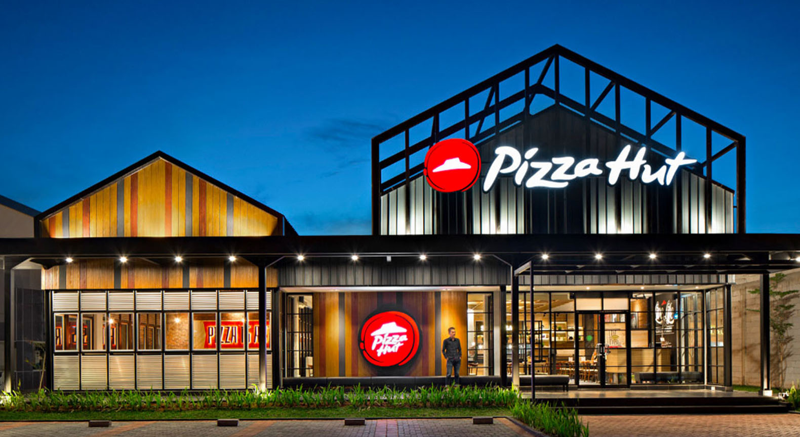
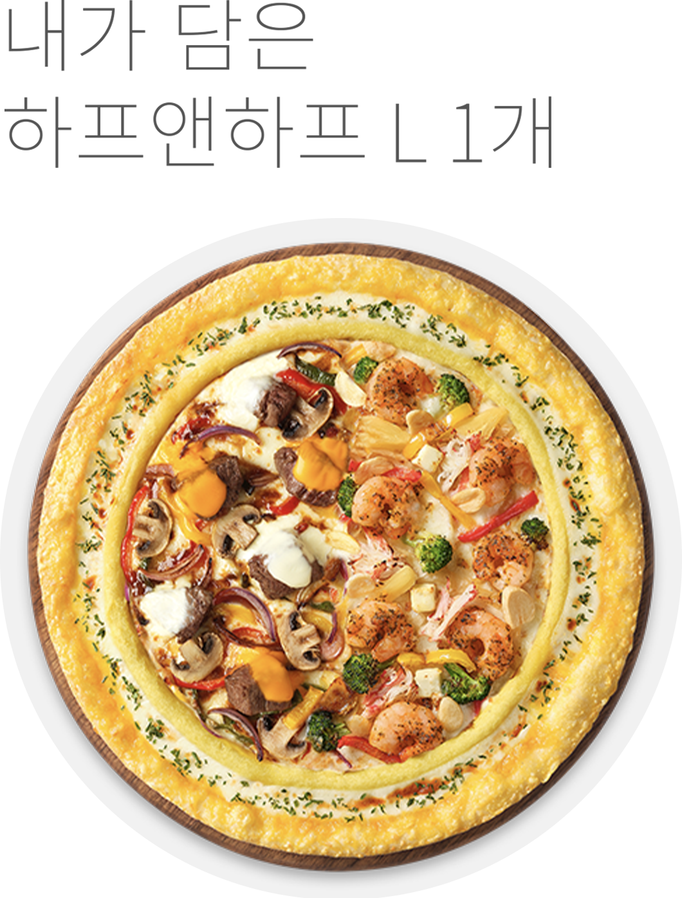
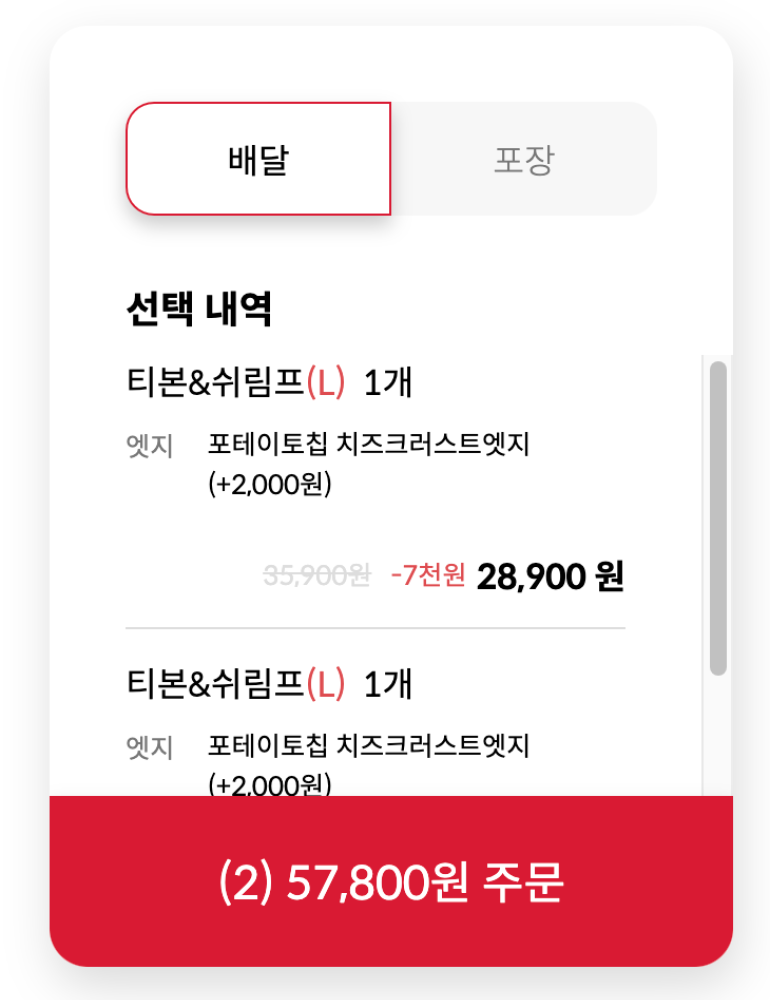

Slick-slider Plugin
\n편리하고 빠르게 작업할 수 있는 Slick-slider Plugin을 이용해 현재 진행하고 있는 이벤트의 배너를 직관적으로 보여주었습니다.\n
\n
\n편리하고 빠르게 작업할 수 있는 Slick-slider Plugin을 이용해 현재 진행하고 있는 이벤트의 배너를 직관적으로 보여주었습니다.\n
\nSwiper Plugin을 가져와 적용하여 내가 추가한 피자 목록을 스와이프 하여 이미지와 함께 볼 수 있도록 하였습니다.\n
\n
\n

기존 사이트에서는 새로 피자를 추가할 시 추가한 내용이 장바구니 하단으로 쌓여\n 지금 추가한 피자가 어떤 피자인지 바로 알아보기 어려웠습니다.\n 또, 똑같은 피자를 눌러도 ‘2개’가 아닌 동일한 이름으로 1개, 1개, 1개,... 연달아 추가됨을 발견할 수 있었습니다.\n
\n
\n
각 토핑 정보와 이미지를 JSON으로 뿌려주어 후에 어떤 토핑이 추가되어도 JSON 파일에만 기입하면 자동으로 등록될 수 있도록 작업했습니다.\n \n 체크박스는 img src를 찾아 변경해 주었고 토핑, 사이드, 음료 목록은 slick-slider 사용해 넘겨볼 수 있게 하였습니다.\n
\n윈도우 하단에 주문 바를 픽스 시켜놓아 추가한 사이드와 음료를 실시간으로 확인할 수 있게 제작했습니다.\n 사이드와 음료를 추가할 시 처음 추가한 제품은 그 이름이, 2개 이상 추가될 시 한’외 1개’, ‘외 2개’ ...의 형태로 추가되도록 작업하였습니다.\n 각 옵션은 최대로 추가할 수 있는 개수가 정해져있고, 이를 넘길 시 안내 창이 뜨도록 하였습니다.\n 총 가격은 옵션들의 가격을 배열에 담고 제거하는 형식으로 계산해 주었습니다.\n
\n토핑 정보, 영양정보, 원산지 정보, 알레르기 정보는 클래스를 추가하고 없애는 방식으로 팝업 처리하였습니다.\n \n 동일한 형식이 반복되는 데이터는 JSON 사용하여 데이터를 뿌려주었습니다.\n
\n